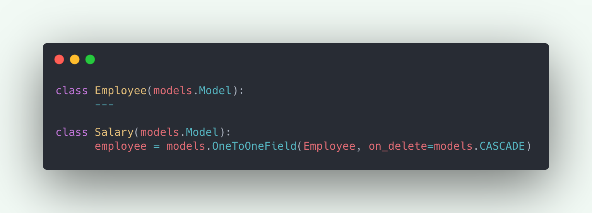
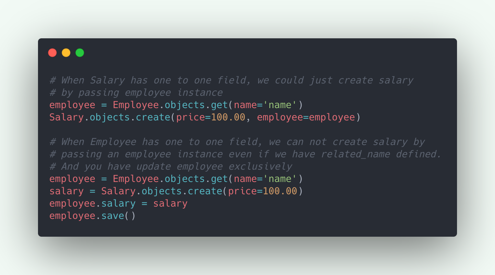
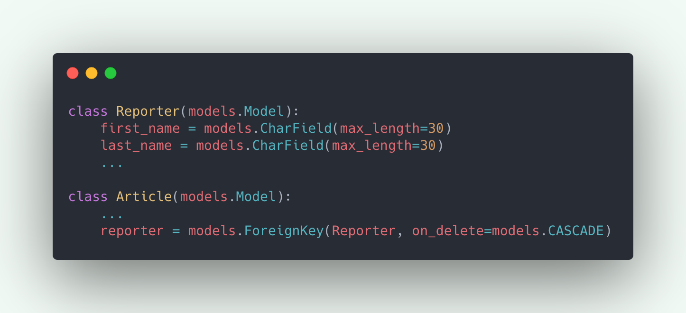
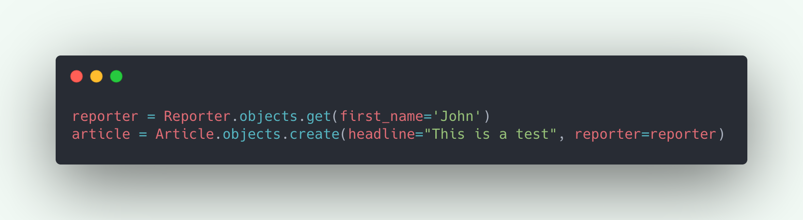
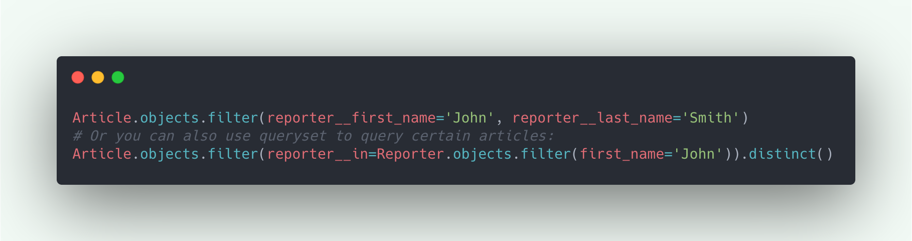
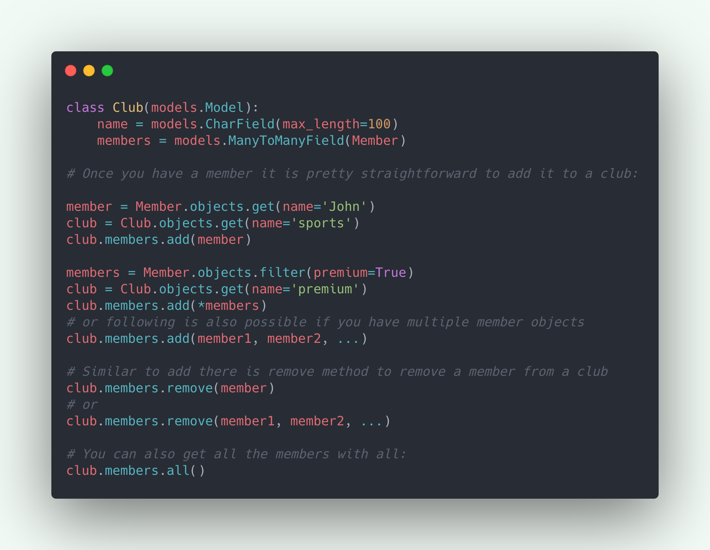
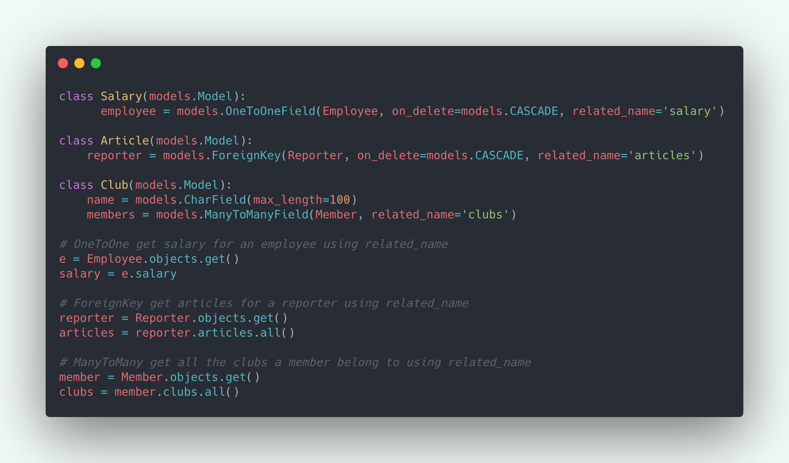
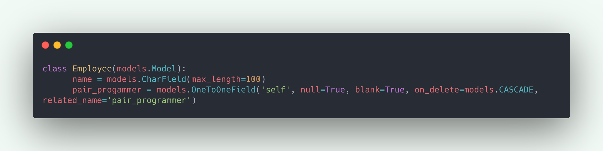
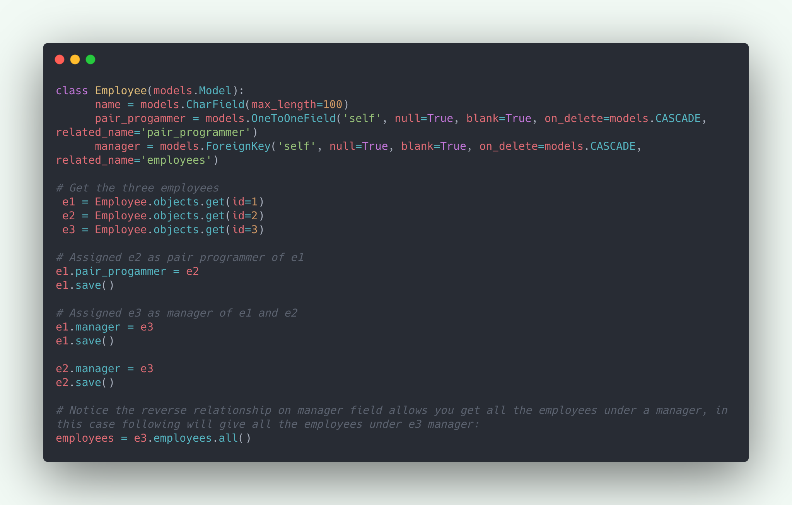

Django
How to effectively design relations between your Django models
How to effectively design relations between your Django models

I have been working with Django for a couple of years now and very often I get confused on how I should design relations between my models. So that it is there for the long haul and I am not having to redesign every relation because the relation with the new model might contradict with existing relations. Or I am not having to ignore this problem until something breaks in production.
This blog intends to give you an idea on the fields that Django uses to design relations and the practices that you should follow while using those fields. Honestly you've already been doing the most things mentioned here but maybe without realising that it makes a difference on where you should put your OneToOne field or even if you need it for that matter.
Relationships
Django uses three relationship fields to design different relations between models. Let’s look at them one by one and understand what they do and when we should use them. Along with these we will also cover a few bits on Reverse and Recursive relationships.
One to One Relationship
Use OneToOneField to define One-to-One relations between two models. But the question is when should one need to use 1-to-1 relations, after all you can implement all necessary fields inside one table.
OneToOne relations are basically vertical partitions of the data, which may have implications for caching. Generally cache systems work on page level and not at field level. So in the following example you might want to cache the information about the Employee but not their Salary. Which would not be possible if you store the salary information in the employee table as fields. By narrowing down the information you’re also minimising the cache per table which makes it possible for a larger cache.

Vertical partitioning gives you the possibility for locking a table. For example if we only want to update the Employee information. We could use select_for_update on the Employee table without locking the salary information.
You can also use 1-to-1 relations when you don't want the salary to be accessible to all employees. There are other ways to hide this information but one of the possibilities is to divide this information in two tables via 1-to-1 relationship.
Once you have decided to use OneToOneField, the second question that comes to mind is in which model should you put the OneToOne field. For instance Employee could also have the salary field with a OneToOne relation with Salary model. In this case a rule of thumb is “If A has B, B should have the one to one field.” So in our case if an Employee has Salary, Salary should have the field. Here are a few practical example to backup this hypothesis:
- Salary should only exist if Employee exists but Employee can exist without salary. So deleting employee should delete salary but employee should not get deleted when you’re deleting a salary.
- Second is if you put salary inside the employee, it will create two migrations where as in other case there will only be one migration.
- Third one is you’ll have to update Employee exclusively when you create a Salary

“My rule of thumb is never to touch the core models for one to one relations.”
Many-to-One relationship
Use ForeignKey to define Many-to-One relations between two models. Note that Django also uses ForeignKey to define One-to-Many relations, it is just a matter of how you’re reading your relations. E.g. In the following example, Many articles can belong to one reporter(Many-to-One) or one reporter can have many articles(One-to-Many).

My rule of thumb to quickly figure-out ForeignKey relation is, “Model which has the ForeignKey field is Many and the model on which the field is defined is One.” Article(Model so Many) -> reporter(Field so One.)
Once you have the reporter creating article is pretty straightforward:

Now the article that you have will be linked to a particular reporter which can be accessed with article.reporter, we can also access fields on reporter from article, e.g. article.reporter.first_name will give the first name of the reporter. You can also filter articles based on the reporter info. E.g. following query will give you all the articles written by “John Smith”

For more information on making queries on ManyToOne relations visit the official django documentation.
Many to Many Relationship
Use ManyToManyField to define many to many relations between two models. Any of the two models can have the ManyToManyField defined but generally you should have it in the object that you’re creating/editing. E.g. In the following example I am creating a club so it makes more sense to allow admin add members to the club in the form rather than editing a member to add to clubs.

For more information on making queries on ManyToMany relations visit the official django documentation.
Reverse Relationship
Reverse relationship is basically a concept to access objects in the reverse direction of the relation defined. E.g. In our OneToOneField example we can access employee from salary object as the field employee is defined in the Salary model. But via a reverse relationship we can access salary for an employee. Similarly, reverse relationships can be used to access articles from a reporter(ForeignKey example) or clubs of a member(ManyToMany Example).
The only thing that we need to do to access objects in reverse direction is to add the related_name parameter to our relational field.

Recursive Relationship
Recursive relationships are used when there is a need for a model to have a relation with its own Instance. E.g. In the OneToOne example there might be possibility that two of your employees do pair_programming, so you can create a relation like following:

And suppose if there is a manager of the two pair programmers but the manager is also an employee, that means Many employees can belong to One manager(ForeignKey), and the manager should have a relationship with itself.

Using the correct on_delete argument
ForeignKey and OneToOne fields accept one required parameter on_delete, this parameter helps to decide what should happen to the related object when you’re deleting the one it is related to. E.g. In our first example what should happen to Salary when the employee it is related to gets deleted. In this case we are using models.CASCADE that means the salary should also get deleted. It is important to know what this argument value could do and which one should be used. E.g. In our ForeignKey example we might not want to delete the article when the Reporter gets deleted but set an anonymous user. In this case we can use models.SET to set a user to the article with a deleted account.
Read more about the on_delete options at official django documentation.
Thank you for reading. Hope this gives you a better understanding about Django relationship fields and you’re designing your model relations efficiently. Cheers.
Tagged under
Django